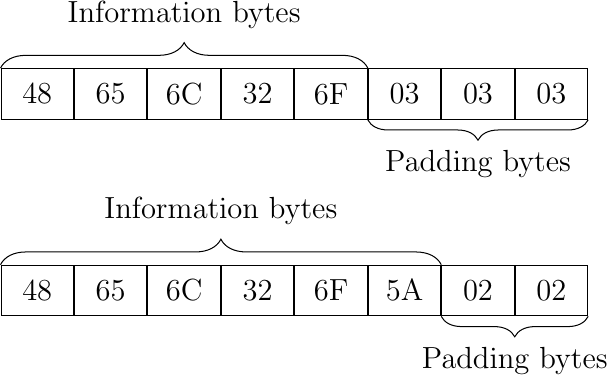

Encryption overview#
Encryption transforms a plain-text into a cipher-text using an encryption key. The process of reversing this operation uses also a key and is called "decryption" 1. These operations can be explained by the following formulas: \(C=E_{k}(P)\) and \(P=D_{k}(C)\), where P = plain-text, C = cipher-text, E = the encryption method, D = the decryption method, and k = the key 1. There exist several types of encryption (symmetric/asymmetric) and several ciphering techniques (block/stream) and modes etc 1.
Symmetric Encryption#
In secret key cryptography, both parties (a sender and a receiver for example) agree on a single secret (shared) key for encryption and decryption 1. The major concern in this case is to securely share the key between the two peers or else the whole system is jeopardized 2. The key management for this encryption is troublesome, especially if a unique secret key is used for each peer-to-peer connection, which results in n(n-1)/2 total number of keys for n-nodes 34. Symmetric encryption schemes are generally defined as stream ciphers or block ciphers 2.
Asymmetric Encryption#
It also known as Public Key Cryptography (PKC) 1. It has been considered the most significant development in cryptography in the last 300-400 years. PKC employs two separate keys:
The public key: which is used to encrypt data by anyone.
The private key: which is kept secret and is used to decrypt data.
This double key feature surmounts the symmetric encryption problem of managing keys, but also makes it mathematically more prone to attacks 2. Moreover, this duality provides authentication and non-repudiation with the assumption that the private key is kept secret 1. However, asymmetric encryption techniques are way slower than symmetric techniques, and they require more computational processing power 31.\ It is obvious that each of these two approaches (symmetric/asymmetric) provide a set of advantages and limitations, therefore a hybrid scheme is the best compromise. Such scheme would apply asymmetric encryption for the secret key distribution and symmetric encryption for the generic data exchange.
Block Ciphers#
In block ciphers the data is encrypted and decrypted one block at a time using the same key 42. In its simplest mode (Electronic codebook mode), the plain text is divided into equally long blocks, which are then fed into the cipher system to produce blocks of cipher text 1. This type of ciphers requires padding before encryption to ensure that the data length is a multiple of the block’s length. Block ciphers can operate in one of several modes; here are the most famous ones are: Electronic Codebook (ECB) mode, Cipher Block Chaining (CBC), Cipher Feedback (CFB, Output Feedback (OFB) etc.
Although CBC, CFB and OFB have good resistance against brute-force and deletion attacks, they are not very resistant to single bit errors which will propagate through different blocks in some modes 1. On top of all, there is also textbf{the Counter (CTR) mode` is a relatively modern approach that provides a good compromise. Like CFB and OFB, it operates on the blocks as in a stream cipher but also it processes them independently as in ECB 1. Using different key inputs, CTR guarantees resistance against brute forcing. Moreover, it allows parallel processing making it superior on performance and speed level.
Stream Ciphers#
Unlike block ciphers, stream ciphers operate on streams of data bit by bit 2. A stream cipher consists essentially of a key stream generator and a mixing function 1. The mixing function is usually a XOR, and the key stream generator is the main unit of the encryption 12. There are several types of stream ciphers but only two are worth mentioning here:
Self-synchronizing stream cipher calculate each bit in the key-stream by using the previous n bits in the key-stream. In this approach the decryption and encryption are synchronized, which causes problematic propagation errors 1.
Synchronous stream ciphers generate the key-stream independently and use the same generation function at both sender and receiver 2. While in this case propagation errors are not an issue, their periodic nature (The key-stream will eventually repeat) poses a vulnerability that can be exploited 1.
Padding#
Within the context of classical cryptography, padding aims essentially to prevent any type of predictability that might reveal a plain-text or its exact length. Such revelations can be beneficial for an attacker and help in breaking the encryption 5. For example, Advanced Encryption Standard-128 (AES-128) is a symmetric block cipher that processes data by blocks of 128 bits, which means that additional random data must be added to packages with size different from 128 bits multiples. This makes the data generically processable and is called padding. There are various approaches to padding, but the most popular (as defined in PKCS#5) appends the missing bytes N with the value N 6.

Figure 2: PKCS#5 block padding
Remark: When using a combination of Message Authentication code (MAC) and encryption with the purpose of ensuring data authenticity and secrecy, the combinations order is very important and can result in some cases in vulnerabilities. This is due to the fact that the receiver has to remove the padding that was originally introduced during the encryption process before decrypting the received cipher-text, which can be exploited by a padding oracle attack 7. This is further explained in the following post Authenticated_Encryption .
References and Further readings#
- 1(1,2,3,4,5,6,7,8,9,10,11,12,13,14)
Gary C. Kessler. An Overview of Cryptography. 2017.
- 2(1,2,3,4,5,6,7)
Abdel-Karim Al Tamimi. Performance Analysis of Data Encryption Algorithms. 2006.
- 3(1,2)
ssl2buy. Difference Between Hashing and Encryption. https://www.ssl2buy.com/wiki/difference-between-hashing-and-encryption, 05.01.2018.
- 4(1,2)
Madhura Oak. Symmetric Cryptography. https://madhuraoakblog.wordpress.com/2014/06/29/symmetric-cryptography/, 05.01.2018.
- 5
Gordon Welchman. The Hut Six Story: Breaking the Enigma Codes. 1982.
- 6
Jonathan Knudsen. Java cryptography. https://www.safaribooksonline.com/library/view/java-cryptography/1565924029/ch07s02.html, 05.01.2018.
- 7
M. Marlinspike. blog: The Cryptographic Doom Principle,. https://moxie.org/blog/the-cryptographic-doom-principle/, Dec.1, 2017, 05.01.2018.